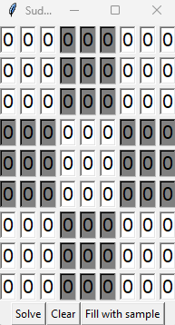

Sudoku solver
I present to you one of my recent projects, that is a Sudoku solver! Sudoku is a logic game, the rules are simple.
A 9×9 square must be filled in with numbers from 1-9 with no repeated numbers in each line, horizontally or vertically. To challenge you more,
there are 3×3 squares marked out in the grid, and each of these squares can't have any repeat numbers either.
Out of pure boredom and need of improving my Python skills, I designed and programmed application that allows user to insert values of the puzzle.
After inputing the values user can click "Solve" button, that fills every empty square with correct answer, thus completeing the puzzle.
There is also a "Clear" button, that reassigns the value 0 to every box. "Fill with sample" button fills some of the boxes with sample values.
